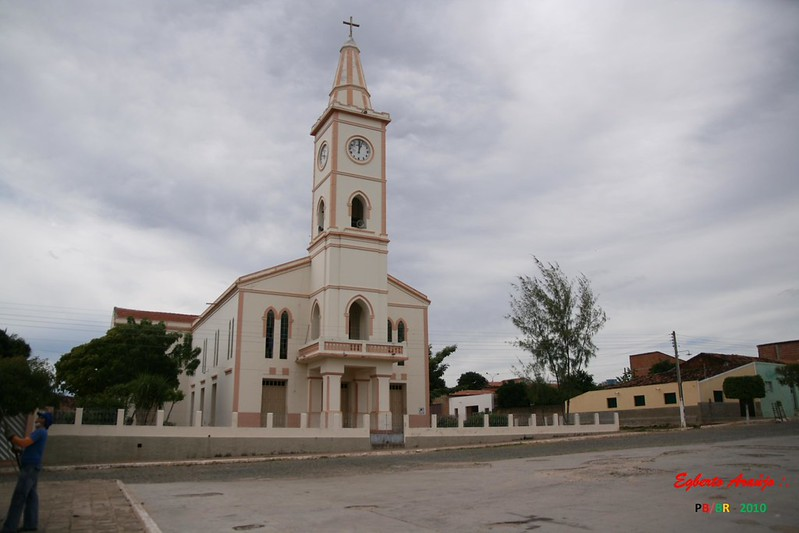

Sobre Diamante-PB
Diamante é um verdadeiro tesouro encravado no coração do Vale do Piancó, representando a força e a beleza do Sertão da Paraíba. Fundada sobre as raízes sólidas da hospitalidade, a cidade é um exemplo da resiliência característica do povo sertanejo, que transforma desafios em motivos de orgulho e união. O brilho desse município se manifesta através de suas tradições culturais vibrantes e de uma fé inabalável que conduz o cotidiano de seus habitantes, unindo o sagrado e o profano em celebrações que atravessam gerações. Com uma atmosfera genuinamente acolhedora, a cidade apresenta paisagens que exalam a autenticidade nordestina. Ali, a natureza e a arquitetura contam a história de um povo que escreve seu destino com trabalho árduo e dignidade.
Cultura Viva e Coração Acolhedor
Em Diamante, a hospitalidade não é apenas um gesto, mas uma herança sentida no sorriso sincero de cada habitante que faz das esquinas da cidade um ponto de encontro e acolhimento. A alma desse povo se revela na riqueza de suas tradições, onde o som da sanfona e o ritmo do forró pé-de-serra ditam o compasso das festividades que celebram a vida no Sertão. O artesanato local, esculpido com mãos habilidosas, transforma elementos da terra em arte, carregando a identidade do Vale do Piancó em cada detalhe. Esse orgulho pelas raízes se manifesta com força nas festas de padroeiros e nas vaquejadas, momentos em que a fé inabalável e a bravura sertaneja se encontram para reafirmar um legado cultural vibrante. Visitar Diamante é mais do que um passeio; é um convite para sentir o calor de uma terra que preserva sua essência e faz com que cada visitante, ao cruzar suas fronteiras, sinta-se verdadeiramente em casa.!
Saiba Mais
Galeria de Fotos

Registro da Praça Central atualmente (imagem do ano de 2023).

Nossa Igreja Matriz nos dias de hoje (imagem do ano de 2008).

Portal Diamante-PB
| Coordenadas | 7° 25' 40" S, 38° 15' 50" O |
| País | Brasil |
| Unidade federativa | Paraíba |
| Região metropolitana | Vale do Piancó |
| Municípios limítrofes | Bonito de Santa Fé e São José de Caiana (norte); Itaporanga, Boa Ventura e Curral Velho (leste); Santana de Mangueira (sul); Ibiara e Conceição (oeste) |
| Distância até a capital | 450 km |
| Fundação | 1961 |
| Governo | |
|---|---|
| Prefeito | Hermes Mangueira Diniz Filho (2024-2026) |
| Área | |
| Total | 269,109 km² |
| Altitude | 310 m |
| População | |
| Total | 6.616 habitantes |
| Clima | Semiárido |
| Fuso horário | UTC-3 |
| PIB | R$ 24.796.541 |